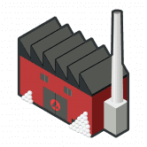 Snow Factory Snow Factory 是一款基于 Avalanche 区块链的去中心化游戏。游戏的目的是比其他玩家更快、更频繁地雇佣更多的矿工。这反过来又可以让您更快地获得更多的 SFT。这些矿工
Snow Finance Snow Finance — BSC 上最冷的单产农场。 Snow Finance 是由经验丰富的团队打造的全新 DeFi 平台，在 Snow Finance 上进行 Stake、Pool、Exchange 和 Earn $SNOW。 以下是我
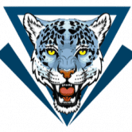 Snow Leopard Swap Snow Leopard Swap 是一个全新的 DeFi 项目，由经验丰富的开发团队设计，作为#BSC 上的第三代通缩收益农场和 AMM。 除了 Goose Finance 引入的回购销毁机制外，我们还在 Snowleopard 的收
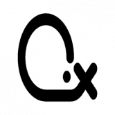 Snowballx Protocol SnowballX Protocol 是一个去中心化的金融平台，旨在使用自动复利模型以可持续的固定复利奖励用户。 通过优化池，您的存款可以获得最高收益，同时充分利用#Avala
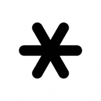 Snowbank 去中心化储备货币 Snowbank 正在构建一个社区拥有的去中心化金融基础设施，为世界带来更高的稳定性和透明度。可在 Avalanche 上获得 Snowbank 是一种去中心化的储备货币，不受挂
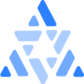 Snowflake.market Snowflake 是第一个建立在 Avalanche 网络上的全球 NFT 市场。 Snowflake 允许用户在链上可用的任何 NFT 上提供报价或列出 NFT。 Snowflake V2 正在进行中，将很快提供自定义智能合约（集合）和
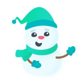 SnowSwap SnowSwap 专为低滑点稳定币掉期而设计，基于 Curve 的 AMM。通过为 yVault 稳定币创建池，交易者可以轻松地在不同的金库之间进行交换而无需支付提款费，并且可以通过交
Socialogue Socialogue 是一个与 Metaverse 集成的社交 NFT 市场。 Socialogue 是一个革命性的平台，结合了蓬勃发展的市场——NFT、社交媒体和元界，这些市场正在迅速发展和变化。结果，出现了
Society of Derivative Apes 欢迎来到衍生猿协会 (SODA)，该协会收集了 9,999 只衍生猿。不隶属于我们派生的任何一个项目，在这里传播#SODAtivity！有多年后端开发经验
SodaDefi 💰BNB-SODA 池：SODA 代币的 365% APR（每天 1%） 💰SODA-SODA 池：438% APR（每天 1.2%）在 SODA 代币中 📈 SODA 的价格每天仅上涨
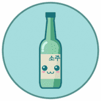 Soju Finance Soju Finance 是币安智能链平台上的中性风味蒸馏酒 DeFi，旨在为长期#SOJU 持有者实现价值最大化。 我们建立这个项目是为了提供最佳的农业体验，同时也调
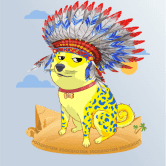 SOL DOGES SOLDOGES 是 Solana 区块链上第一个以 DOGE 为主题的 NFT。 Play to Earn 游戏和矢量动画 9999 Shiba Inu DOGE NFT 以编程方式生成并生活在 Solana 区块链和 Arweave 上。它们是 Solana 链上最酷的 DOGE NFT。这些
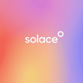 Solace Protocol Solace 是一种去中心化的覆盖协议，是一种保险替代方案，它允许 DeFi 流动性提供者和做市商在智能合约被利用时对冲风险。 Solace 的目的是通过为安全、可靠和值得信赖
Solana Farm 我们相信 BSC 生态系统的力量并相信我们的社区。我们将从 bsc 代币开始，并继续作为 de-fi 平台。加入我们并保持安全！ Solana 的第一个 Staking BSC 代币 我们相信 Solana Farm 是未来。 Solana
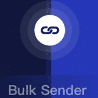 Solana Multisender 易于使用的 dapp 向 solana 网络中的数千个地址发送/空投 sol 和 spl 令牌，非常省时，只需像幻像这样的交互即可完成，无需接触私钥，保证安全Solana 多发送器。
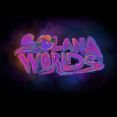 Solana Worlds 每个世界都是由 200 多种不同的数字绘画和摄影属性通过算法生成的。 没有两个世界是相同的。 所有权证明永久存储在 Solana 区块链上。 世界由银河、行星、卫星、流
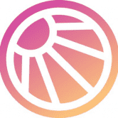 Solarbeam Solarbeam 是一个去中心化交易所，提供流动性并支持 Moonriver 网络上的点对点交易。我们目前是网络上领先的 DEX。 目标是为加密货币社区提供一个全面便捷的一站式平台
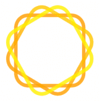 Solarfare Solarfare (SLF) 是一种 BEP-20 代币，具有 LP 收购、质押赚取 BNB 以及对 Binance 钱包的慈善捐款。我们的 DApp 位于我们的网站上，可用于轻松质押您拥有的任何 $SLF 以赚取 BNB，没有风险
Soldiers Land SoldiersLand 是第一款真正实用的 NFT 游戏。在这个游戏中，你可以打造你想要的士兵，装备你想要的装备，在其他游戏中使用你的 NFT 资产使其更强大，参与挑战，与你的朋
Soldiers Of The Metaverse 什么是元节 该术语是在尼尔·斯蒂芬森 1992 年的科幻小说《雪崩》中创造的，指的是物理、增强和虚拟现实在共享在线空间中的融合。简而言之，元宇宙是社交参
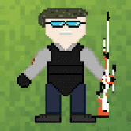 Soldiers Society 士兵协会是由 3333 名独特的像素艺术 NFT 士兵组成的有限营——生活在 Polygon 区块链上的独特数字收藏品。你的士兵不仅是你的化身，也是你的社团成员，为所有游戏玩
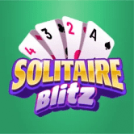 Solitaire Blitz 欢迎来到移动游戏电子竞技的前沿。 Solitaire Blitz 将令人兴奋的多人游戏玩法带入了常年的 Klondike Classic，现在建立在最新的 Joyride 电子竞技平台上。 Solitaire Blitz 具有流畅的游
Solitaire crypto Solitaire Crypto 是一款在币安智能链 (BSC) 网络上运行的区块链游戏，这款游戏具有完全竞争和直观的动态，让玩家可以自动或无限地创收。 Solitaire Crypto 是第一款统一了智能合约和区
SoloLink SoloLink 是基于 Tron.network 区块链创建的一个个去中心化、安全、可验证的分红型游戏平台。SoloLink 团队致力创建一个透明的、安全的、充满乐趣的游戏的游戏平台
SOLucky SOLucky 是 Solana 上的第一款乐透游戏。 真正的公平 - 通过块哈希抽奖 高速 - 每个周期不到 1 分钟，实际上是每个周期 100 个 Solana 块 高奖励 - 58x 奖励，因为 Solana 区块哈希是 base58 格式
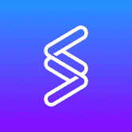 Solv Protocol Solv 协议是用于创建、管理和交易金融 NFT 的去中心化平台。 Vesting Vouchers 作为其首个金融 NFT 产品，是代表锁定归属代币的细分 NFT，从而释放其流动性并为加密项目的筹
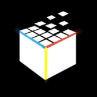 Somnium Space Somnium Space 是一个建立在区块链上的开放、社交和持久的 VR 世界，每个人都可以在其中购买土地、建造或进口物体和化身，轻松地将他们的体验货币化并沉浸在完全替
Sonar Moji Moji 有时很可爱，有时很奇怪，但总有 10,000 个可玩的 3D 化身很有趣。 Moji 在 Sonar 中活跃起来，他们可以通过语音和文字结交朋友、表达表情并使用表情符号创造世界。预
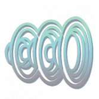 SonicBoom Finance SonicBoom Finance 是在 Polygon 和 QuickSwap 交易所上运行的去中心化交易所，具有许多其他功能，可让您赚取和赢取代币。 我们正在尝试做的是创建一个永久通缩令牌，即 Superso
 网络上的区块链游戏，这款游戏具有完全竞争和直观的动态，赋予其")